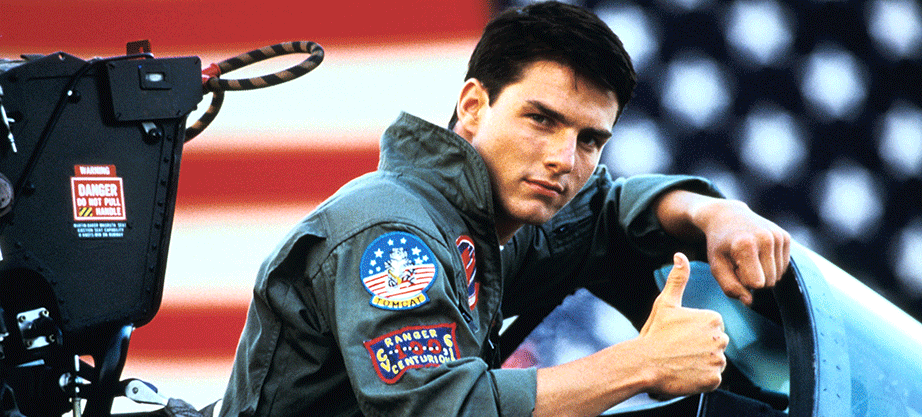
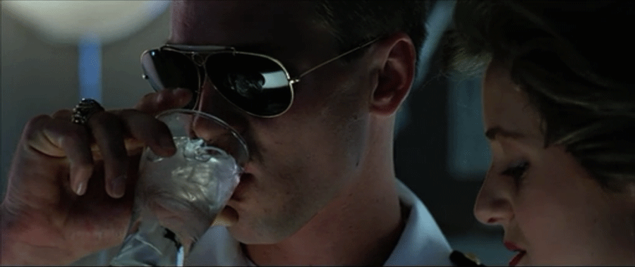
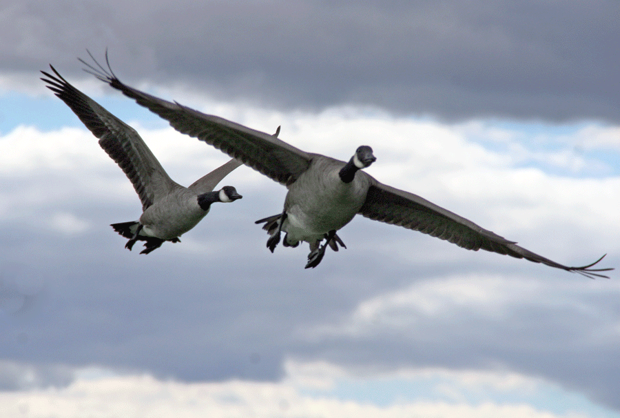

Meet Our Crew
Fly to the Limit was founded by Olga and Bruce McKenzie. Both are born and bred Southland locals. They are also commercial pilots with 28 years of experience flying for Middle Eastern airlines. They have flown and travelled the world! Olga and Bruce have gathered together a team of outstanding pilots who are also trained in sustainable tourism and share a love for the Queenstown and Wanaka mountains and environment.
Maverick
Maverick is an Irish-born stunt pilot who has flown with the UK Airforce Stunt Team, the Red Arrows. Maverick owns an Extra EA-200 for the ultimate full stunt flight experience and flies all FTTL fixed wing aircraft (as sedate or as extreme as you like!)
Charlie

Charlie has been a commercial pilot for 13 years in Africa, Russia and South America. She owns a Cessna – 172 Skyhawk P. This craft, and Drpper’s flying experience is ideal for our low level sight seeing experiences.
Iceman
With over 10,000 hours piloting helicopters in the forest and mountains of the Southern Alps for recovery and mountain rescue operations, Iceman has an intimate knowledge of these vast areas.Iceman will assist in plotting your route and provision drops.
Goose
Goose caught the adventure bug early and has been flying since he was 12 years old. His first solo flight was at the age of fourteen. Goose is an avid and active skier, tramper, climber and glider. Goose lives to showcase our incredible environment to clients.